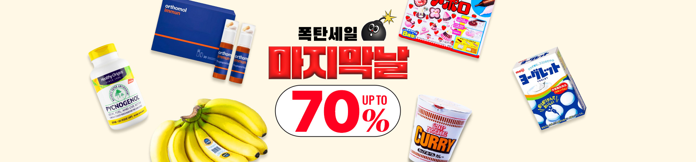

<!DOCTYPE html>
<html lang="ko">
<head>
  <meta charset="UTF-8">
  <meta name="viewport" content="width=device-width, initial-scale=1.0">
  <title>05실습예제_쿠팡 메인슬라이드 구현하기</title>
  <style>
    *{margin:0px; padding:0px;}
    header{
      height:70px;
      background-color: #ccc;
      text-align: center;
    }
    header h1 img{width:250px;padding-top:10px;}
    .slide-container{position:relative;}
    .slide-wrapper div{display:none;}
    .slide-wrapper div:first-child{display:block;}
    /* 내비게이션 서식 */
    .lnb{position:absolute; right:10px;top:45px;}
    .lnb > ul{}
    .lnb > ul > li{list-style:none;border:2px solid #fff;} /* 똑같이 테두리 서식을 넣어줘야, 오버했을 때 덜렁거리지 않음*/ 
    .lnb > ul > li:hover{border:2px solid #00f;}
    /* .lnb > ul > li:hover{outline:1px solid #00f;} */
    .act{border:2px solid #00f !important;} /* 오버하고 나서도 테두리 서식 살아있게*/
    .lnb > ul > li >a{}
    .lnb img{display:block;} 
  </style>
  <!-- 1.제이쿼리 라이브러리 연결 -->
  <script src="./script/jquery-3.7.1.js"></script>
  <!-- 2.제이쿼리 랩퍼 -->
  <script>
    $(document).ready(function(){
      //1. 메뉴변수
      /*let lnb = $('.lnb > ul > li'); //메뉴
      let slide = $('.slide-wrapper > div'); //슬라이드
      

      let i = 0;
      lnb.eq(i).addClass('act');
      //2. 마우스오버시 해당 인덱스값을 구한다
      lnb.mouseenter(function(){
        //기존 자동으로 움직이는 시간을 제거하여 멈추게 하고
        clearInterval(Timer);
        i = $(this).index();
        console.log(i);

        //기존 테두리 서식 제거하기(act서식 제거)
        lnb.removeClass('act');
        //마우스 올린 메뉴에만 테두리 서식하기
        lnb.eq(i).addClass('act');

        //보이는 이미지는 숨긴다
        slide.hide();
        //해당 인덱스 번호에 맞는 이미지가 보여지게 한다
        slide.eq(i).show();
      })

      lnb.mouseleave(function(){
        Timer = setInterval(auto_slide,3000)
      })

      //자동으로 움직이는 함수
      function auto_slide(){
        if(i==5){
          i=0;

        }else{
          i++;
        }
        //기존 테두리 서식 제거하기(act서식 제거)
        lnb.removeClass('act');
        //마우스 올린 메뉴에만 테두리 서식하기
        lnb.eq(i).addClass('act');

        //보이는 이미지는 숨긴다
        slide.hide();
        //해당 인덱스 번호에 맞는 이미지가 보여지게 한다
        slide.eq(i).show();
      }

      let Timer = setInterval(auto_slide,3000)
      */

      //문서객체조작 방식으로 구현하기
      let lnb = $('.lnb > ul > li'); //메뉴
      let slide = $('.slide-wrapper > div'); //슬라이드
      let slide_img = $('#slide_img'); //슬라이드 이미지
      let img_url;

      lnb.mouseenter(function(){
        i = $(this).index();
        img_url = $(lnb).eq(i).find('a').attr('href');
        console.log(img_url);
        
        slide_img.attr('src',img_url);
      })
    })
  </script>
</head>
<body>
  <!-- 상단헤더영역 -->
  <header>
    <h1>
      <a href="#" title="메인페이지로 이동하기">
        
      </a>
    </h1>
  </header>
  <!-- 메인콘텐츠 영역 -->
  <main>
    <article class="slide-container">
      <nav class="lnb">
        <ul>
          <li><a href="./images/coupang01.jpg" title="메뉴"></a></li>
          <li><a href="./images/coupang02.png" title="메뉴"></a></li>
          <li><a href="./images/coupang03.jpg" title="메뉴"></a></li>
          <li><a href="./images/coupang04.jpg" title="메뉴"></a></li>
          <li><a href="./images/coupang05.jpg" title="메뉴"></a></li>
          <li><a href="./images/coupang06.jpg" title="메뉴"></a></li>
        </ul>
      </nav>
      
      <!-- <div class="slide-wrapper">
        <div class="slide"></div>
        <div class="slide"></div>
        <div class="slide"></div>
        <div class="slide"></div>
        <div class="slide"></div>
        <div class="slide"></div>
      </div> -->
    </article>
  </main>
  <!-- 푸터영역 -->
  <footer>

  </footer>
</body>
</html>